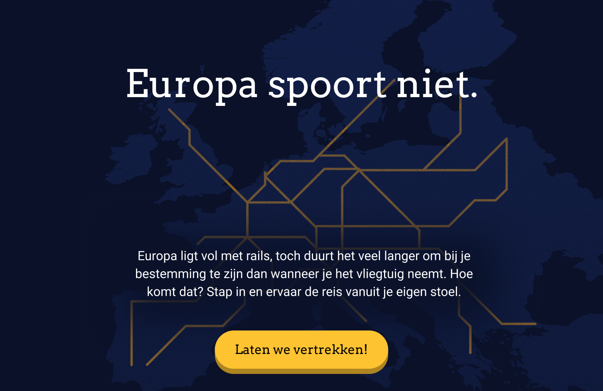
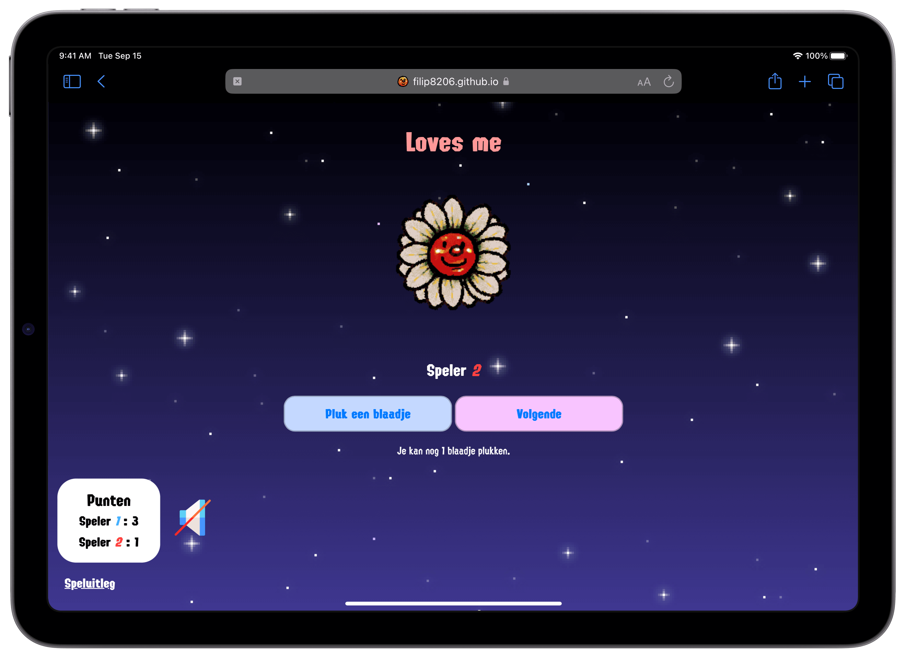

Hello, I'm Filip!
I'm an enthusiastic student at the Amsterdam University of Applied Sciences who is eager to learn and always puts his whole heart into his work. I'm currently in my third year of HBO Communication and Multimedia Design, specializing in visual interface design.
Built to Last.
UI Design
Built to Last is an app focused on making tech more fair. With unfair manufacturing and exploiting workers, tech is not built for our benefit. Built to Last helps users make informed decisions about their next purchase and increases awareness on the ethicality of the tech industry.
Europa spoort niet
UI Design
The international European rail network has a lot of limitations, which make it unappealing for people to travel by train. This project increases awareness on the issues with the rail network in a fun story.
Coding Duolingo
Development
The goal of this project was to replicate two pages of an existing website, coding it entirely from scratch using HTML, CSS and JavaScript. In this project, I chose two pages from the Duolingo website to replicate.

Climate Claim
UX/Product development
This project was all about following your passion. And that's what I did. With two other teammates, we created a new boardgame from scratch. The theme of this boardgame is to save the earth from climate change, tile by tile. The player who saves the most tiles of climate change, wins!

First JavaScript project
Development
During this project, I used JavaScript for the first time. Using only HTML, CSS and JS, I made the game 'Loves me..?' from the Nintendo DS.
Tostada cooking-app
UX/UI
This group project was all about one single recipe, the Mexican tostada. The goal was to create a tostada-themed app that instructs users to cook a delicious tostada themselves.

PinqPonq Studio
UI Design
The PinqPonq Studio design challenge was a website where you can create your own PinqPonq messenger bag. The main focus was to create an intuitive user interface that contained the numerous customization options the user can choose between.

De Boekenzoeker
UI Design
De Boekenzoeker is an app that helps people find their perfect book. During this project, the primary focus was to implement an existing design system into an intuitive user interface suited for a tablet on a stand in a public library.